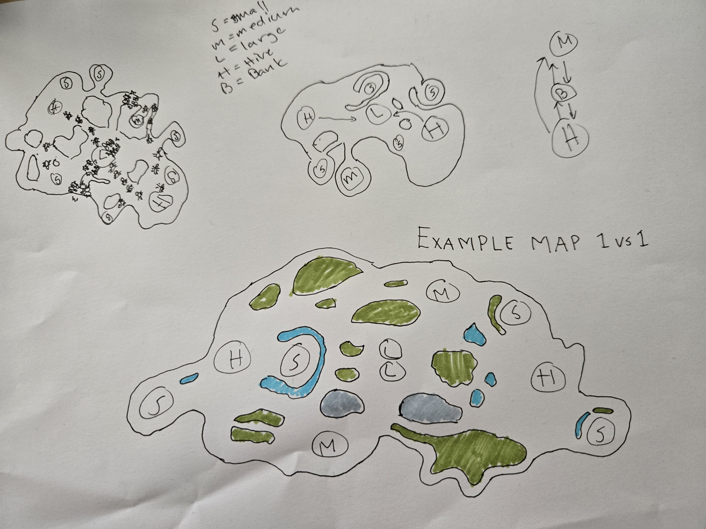

RTS Level Design
Purpose And Status #
This document defines map-design principles and records individual map concepts for Ant RTS. It extends the existing combat, economy, logistics, and technical contracts; it does not replace them.
Status: exploration draft. The first concept below is based on the supplied hand-drawn minimap. Its legend is recorded; terrain-interaction rules remain a proposed contract pending faction design and playtests.
Locked Constraints #
- Maps use a fixed isometric camera and must remain readable at the 200 soft-cap / 260 hard-cap scale per player.
- Water is impassable and is the primary terrain tool for forming early routes and chokepoints.
- Biomass is valuable only after delivery to a colony core. Long collection routes are intentionally raidable.
- Corpses, neutral creatures, and regenerative sites create contestable map objectives.
- Players win by destroying the opposing colony core. Maps must permit base pressure without making the first attack decisive by default.
- Placement expands through adjacency projection. Starting areas need readable room for early construction and later connected growth.
Map Design Principles #
Route Choice Over Single-Lane Fighting #
Every primary objective should have at least two meaningful approaches by the time the game reaches midgame. A chokepoint may make one approach dangerous, but it must not turn the entire match into permanent frontal combat.
Logistics Creates The Frontline #
Resource locations should create haul routes that can be scouted, protected, intercepted, or bypassed. A safe nearby site establishes the opening economy; increasingly valuable sites should require progressively more exposure.
Symmetry Of Opportunity #
For a competitive 1v1 map, starting positions, travel times, initial biomass, expansion space, and access to high-value objectives must be equivalent under map symmetry. Geometry need not be visually mirrored if the measurable advantages are matched.
Terrain Interaction Model (Proposed) #
Terrain must create stable early-game route pressure while allowing deliberate, visible midgame route changes. Terrain interactions are faction overlays, not universal default movement rules.
| Terrain | Baseline ground movement | Baseline vision | Proposed faction overlay | Design guardrail |
|---|---|---|---|---|
| Water | Blocked | Does not block vision | Weaver-style ant bridges create a ground crossing | Crossing must require a visible, destructible commitment and cannot appear directly at an enemy core |
| Rock | Blocked | Blocks ground-unit vision | Flying units see over it | Rock edges must not conceal an entire high-value objective from all ground approaches |
| Vegetation | Blocked | Blocks vision, including from flying units | Leafcutter-style clearing permanently opens a corridor | Clearing must be telegraphed, slow enough to contest, and leave an unambiguous traversable result |
| Open ground | Traversable | Open | None | Preserves maneuver space for swarms, flanks, and corpse recovery |
Terrain Rules To Preserve Map Integrity #
- Water stays impassable for every default ground unit; bridges are explicit faction abilities or structures, not ordinary pathing.
- A bridge creates a new approach, not a hidden teleport. It must have a visible endpoint, a clear footprint, counterplay through destruction or denial, and deterministic pathing behavior.
- Water vision creates scouting information but not traversal. Shoreline objectives may therefore be visible before they are safely collectible.
- Rock creates ground sightline breaks while allowing air scouting; vegetation creates stronger information denial because it blocks vision even from above.
- Vegetation clearing changes the map permanently for both players. Its owner gains the timing advantage, but neither player gains exclusive use of the resulting corridor.
- No player may clear vegetation or establish a bridge in a way that leaves the opposing colony with only one viable ground exit.
Concept 001: Watercut Crossing #
Source #
Reference sketch: irl-documents/example_level_layout.jpg.


Working Thesis #
Two colonies develop from protected outer territories toward a broken central land corridor. Water and dense terrain divide the corridor into several crossings, turning biomass transport into a visible strategic commitment. The first player to take an exposed central objective gains throughput but exposes more than one route to raids.
Sketch Observations #
- The drawing is labelled as a
1 vs 1example layout. Hmarks a starting hive.S,M, andLmark small, medium, and large biomass resource nodes respectively.Bmarks a fortified bank.- Blue areas mark water, green areas mark vegetation, and gray areas mark rock or elevation.
- The primary land shape contains several constrictions near water and terrain clusters instead of one uninterrupted central field.
Intended Play Flow #
- Each player establishes a colony in a buildable, defensible outer zone with enough nearby biomass for the opening economy.
- Scouts identify two or more routes toward the center and locate the first exposed biomass opportunities.
- Players decide whether to protect a short, lower-value route or commit carriers and an escort to a longer contested route.
- Midgame forces fight for crossings, corpses, banks, and regenerative objectives while raiders threaten the alternate logistics path.
- Terrain-specialist factions can commit to opening a vegetation corridor or building a bridge, creating a legible new attack avenue that opponents can scout and contest.
- Late-game pressure uses the map's open flank spaces and multiple approaches to threaten the colony core rather than relying on a single choke break.
Preliminary Zone Roles #
| Zone | Role | Required properties |
|---|---|---|
| Home basin | Starting colony and first construction area | Symmetric buildable area, protected first biomass, at least two exits by midgame |
| Near field | Early contested harvesting | Short enough to contest before a full army, exposed enough to enable worker raids |
| Crossing network | Central conflict and route control | Multiple crossings with different widths or travel lengths; no single permanent lockout |
| Side route | Flanking and logistics disruption | Longer or narrower than the central route, but viable for small raiding forces |
| Major objective | High-value biomass or regenerative income | Contested from more than one direction and never safely banked without route exposure |
| Bridge site | Potential water crossing | Clearly visible shore-to-shore span, with landing space on both banks and no direct core access |
| Vegetation gate | Potential cleared route | Blocks movement and vision initially; opens a permanent, mutually usable corridor when cleared |
Design Risks To Test #
- A water crossing may be narrow enough for AoE or behemoths to create an unbreakable late-game blockade.
- Nearby safe biomass may be too rich, delaying meaningful map interaction.
- Central resources may be too exposed for carriers to use, converting the middle into combat-only space.
- Uneven obstacle placement can create unequal travel distance or building room despite an apparently symmetric minimap.
- A bridge or cleared vegetation gate may make the defending route irrelevant, especially if it bypasses all existing bank and interception space.
- Flying vision over rock may expose resource routes too early, while vegetation that blocks air vision may create overly safe ambushes.
- Different movement overlays may bypass the intended logistics pressure; each must be measured against the base map's route and vision budget.
Open Questions For The Sketch #
- Are the black ant marks unit routes, spawn markers, or examples of active battles and harvesting groups?
- Is gray terrain impassable rock, traversable elevation, or a different terrain category?
- Which locations are intended as the two colony starts, and which resource nodes are intended to be the first shared objective?
- Which water edges are deliberate bridge candidates, and should every bridge candidate have a corresponding counter-route?
- Which vegetation clusters are intended to be permanent blockers versus clearable route gates?
- Is the layout meant to be rotationally symmetric, mirrored, or deliberately asymmetric with equivalent opportunity?
Map Generation And Fairness (v1 baseline) #
Resolves item 8 of the design review. These rules are measurable and apply on top of the principles above.
Map Sources #
- A hand-authored curated pool serves ranked and competitive play.
- Seeded procedural generation serves casual and custom play. It is constrained by the same validator.
Legality Tiers #
One validator produces two tiers. Competitive-legal additionally requires identical starting biomass and identical buildable area for both starts. Maps that pass only the casual tolerances are labeled casual.
| Metric | Competitive-legal | Casual-legal |
|---|---|---|
| Start-to-objective travel-time difference | Within 3% | Within 10% |
| High-value objective access difference | Within 5% | Within 15% |
| Starting biomass and buildable area | Identical | Within the casual access tolerance |
Spawn And Route Minimums #
Both tiers must satisfy:
- Safe-harvest window of at least
90 sbefore an enemy scout-speed unit can reach the first node, measured by travel time. - At least
2viable early expansion routes per spawn by minute4. - At least
2distinct routes between starts whose lengths differ by at least15%.
Shoreline Events #
- Shoreline events are not allowed on competitive-legal maps.
- On casual and custom maps they are server-scheduled from the match seed and placed either as mirrored pairs or at a shared contested site.
- Each event is telegraphed
30 sahead. - Each event's value is at most
10%of the map's starting biomass value. - At most
1event is active at a time, with at least120 sbetween events.
Biomes #
Biomes are cosmetic. They never change gameplay rules, and each must pass the readability tests in Technical requirements.
Validation Pipeline #
- Static checks on every map: symmetry metrics, route graph, safe-harvest time, buildable area, impassable-water connectivity, and the bridge and vegetation guardrails above.
- Runtime check on the curated pool: automated AI-vs-AI runs with mirrored sides (see AI). A map fails if either side wins more than
55%of the run set.
Placeholder: the run count and AI tier for the runtime check are not yet defined.
Validation Checklist For A Playable Blockout #
- [ ] Equalize colony-core-to-first-biomass travel time for both players.
- [ ] Measure travel time from each start to every shared objective by each viable route.
- [ ] Confirm every major objective has at least two approaches for ground units.
- [ ] Confirm a player cannot fully deny all opponent routes with one defensive position.
- [ ] Verify adjacency-projected construction has comparable expansion room at both starts.
- [ ] Test carrier interception and recovery along each route using early, mid, and late army sizes.
- [ ] Test fixed-isometric readability for crossings, water edges, resource objects, and unit silhouettes.
- [ ] Test bridge construction timing, destruction, visibility, and route-value change against the existing crossings.
- [ ] Test vegetation-clearing time, warning, permanence, and the value of the opened corridor to both players.
- [ ] Test ground and air vision at every rock edge, water edge, vegetation gate, and major objective.
- [ ] Test special movement overlays after faction movement rules are finalized.